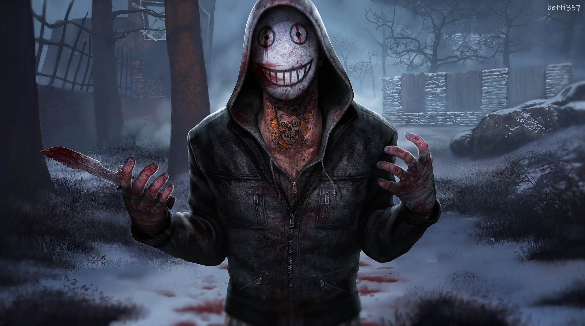

What is Dead by Daylight?
Dead by Daylight is an asymmetric multiplayer survival horror online game developed by Canadian studio Behaviour Interactive. It is a one-versus-four game in which one player takes on the role of a Killer and the other four play as Survivors; the Killer must impale each Survivor on sacrificial hooks to appease a malevolent force known as the Entity, while the Survivors have to avoid being caught and power up the exit gates by working together to fix five generators. Alongside original characters, the game licenses characters and settings from franchises such as A Nightmare on Elm Street, Attack on Titan, Crypt TV, Evil Dead, Halloween, Hellraiser, Left 4 Dead, Resident Evil, Ringu, Saw, Scream, Silent Hill, Stranger Things, and The Texas Chainsaw Massacre.
When hunting Survivors, the Killer must capture them by either striking them with their weapon (one strike injures Survivors and a second strikes puts them into a dying state) or by grabbing them in one move by catching them unexpectedly. Although Survivors can attempt to escape the hook the first time they are impaled, success is unlikely. They can also be saved by other Survivors. If they are hooked a second time, they enter a "struggle phase", where they must resist the Entity as it attempts to take them out of the game by performing skill checks until they are either killed or rescued. If they are hooked a third time, they will be sacrificed to the Entity.
The Survivors' movement options consist of sprinting, walking, crouch-walking, or crawling. They must elude the Killer by losing their line of sight in a chase or by successfully hiding from them. Most Killers can only move at a pace that is moderately faster than that of a sprinting Survivor. However, the Killer is slower in other movements, such as vaulting obstacles. With some exceptions, Killers cannot leap over obstacles that Survivors can throw down into their path and must instead go around them or destroy them. The Killer also has an aura-reading ability, constantly revealing the location of generators, hooks, and sometimes Survivors. Every Killer has their own unique power.